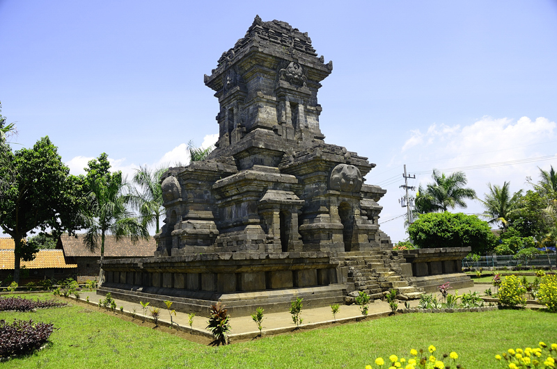

อาณาจักรสิงหะส่าหรี

สิงหะส่าหรีถูกก่อตั้งโดยเกิน อาเราะ (ค.ศ. 1182-1227/1247) ผู้ซึ่งปรากฏชื่อในนิทานพื้นบ้านยอดนิยมในเขตชวากลางและตะวันออก เรื่องราวชีวิตส่วนใหญ่ของพระองค์และประวัติศาสตร์ช่วงต้นของสิงหะสาหรีนั้นมาจากพงศาวดารปาราราตอน ซึ่งมีบางส่วนที่เป็นตำนาน เกิน อาเราะเป็นบุตรกำพร้าพ่อของหญิงนามว่า เกิน เอินเดาะ (บางตำนานกล่าวว่าว่า พระองค์เป็นพระโอรสของพระพรหม) ในอาณาจักรเกอดีรี